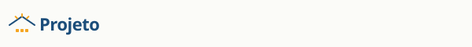

Ativos de marca
Arquivos preservados em ../assets/brand e ../assets/icons. Carregados aqui diretamente dos arquivos do projeto (sem hotlink).
Logotipos
logo-mark.svg

logo-horizontal.svg
Sobre fundo escuro
Mesma marca, lida em seção
--primaryÍcones (SVG stroke)
Ícones com stroke de 1.8px e cores herdadas de currentColor. Nunca emoji como ícone funcional.